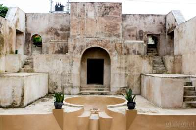

Tentang Gua Siluman
Gua Siluman adalah Gua Siluman adalah salah satu objek wisata alam yang menarik di Bantul, Yogyakarta. Gua ini terletak di Desa Sendangsari, Kecamatan Pajangan, Bantul, Yogyakarta. Namanya sendiri memberikan nuansa misterius, dengan cerita dan keyakinan lokal yang melingkupi keberadaannya.Keunikan Gua Siluman Gua ini terkenal dengan stalaktit dan stalakmit yang terbentuk alami, serta lorong-lorong yang memukau para pengunjung. Kesan mistis terkadang juga menarik minat wisatawan untuk menjelajahi ke dalam gua ini. Cerita mistis yang mengelilingi gua ini menjadikannya menarik bagi yang suka tantangan dan keunikan.Cerita dan Mitos Lokal Masyarakat setempat meyakini bahwa gua ini memiliki kekuatan supranatural atau mistis. Konon, gua ini dihuni oleh makhluk gaib atau siluman yang menjaga gua tersebut. Mitos dan cerita mistis tersebut kadang menjadi daya tarik tersendiri bagi pengunjung yang tertarik dengan hal-hal yang berkaitan dengan spiritualitas.Pengalaman Wisata Bagi pengunjung yang datang, biasanya mereka dapat menjelajahi lorong-lorong gua yang terangkai dengan stalaktit dan stalakmit yang indah. Ada pemandu lokal yang bisa mengarahkan wisatawan dan memberikan penjelasan tentang sejarah dan keunikannya.
Informasi Praktis
Lokasi: Jl. Wonocatur No.26, Karang Bendo, Banguntapan, Kec. Banguntapan, Kabupaten Bantul, Daerah Istimewa Yogyakarta 55198
Jam Operasional: 24 jam
Harga Tiket: Gratis!